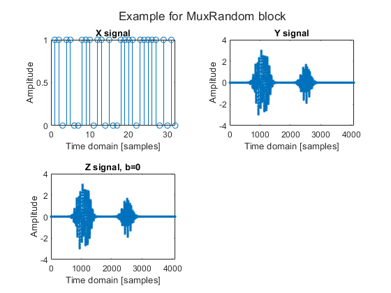
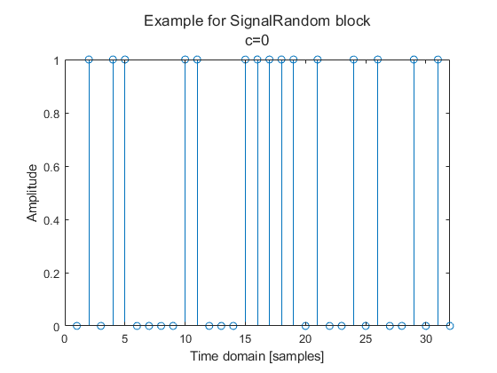
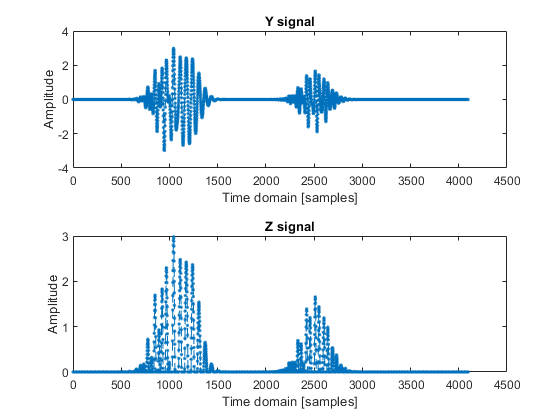
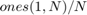
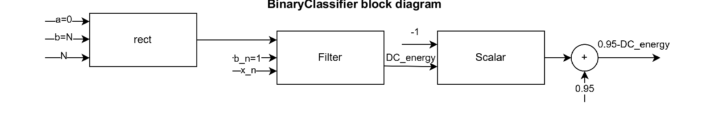

Contents
clear all; clc; close all;
Section (A) - Adding new utils
We have implemented new utils using blocks from previous homeworks. Here are the diagram blocks and examples:
fontSize = 20; N = 4096; figure; imshow(imread('blocks3\DigitalRandom.png')); title("DigitalRandom block diagram", 'FontSize', fontSize); figure; [x] = DigitalRandom(N); stem(x, '--.'); xlim([0,32]); title('Example for DigitalRandom block'); xlabel('Time domain [samples]'); ylabel('Amplitude'); figure; imshow(imread('blocks3\NaturalRandom.png')); title("NaturalRandom block diagram", 'FontSize', fontSize); [y, y_15] = NaturalRandom(N); figure; nexttile; sgtitle('Example for NaturalRandom block'); plot(y_15.', '--.'); xlabel('Time domain [samples]'); ylabel('Amplitude'); legend(compose('Signal #%d', 1:size(y_15, 1))); title('Signals'); nexttile; plot(y, '--.'); xlabel('Time domain [samples]'); ylabel('Amplitude'); title('Sum of signals'); figure; imshow(imread('blocks3\MuxRandom.png')); title("MuxRandom block diagram", 'FontSize', fontSize); figure; [z,b] = MuxRandom(x,y); nexttile; sgtitle('Example for MuxRandom block'); stem(x); xlim([0,32]); title('X signal'); xlabel('Time domain [samples]'); ylabel('Amplitude'); nexttile; plot(y, '--.'); title('Y signal'); xlabel('Time domain [samples]'); ylabel('Amplitude'); nexttile; if b == 1 stem(z); xlim([0,32]); else plot(z, '--.'); end title(compose('Z signal, b=%d', b)); xlabel('Time domain [samples]'); ylabel('Amplitude'); figure; imshow(imread('blocks3\SignalRandom.png')); title("SignalRandom block diagram", 'FontSize', fontSize); figure; [x,c] = SignalRandom(N); nexttile; sgtitle({'Example for SignalRandom block', compose("c=%d", c)}); if c == 0 stem(x); xlim([0, 32]); else plot(x, '--.'); end xlabel('Time domain [samples]'); ylabel('Amplitude'); 
GreaterThan block
As Example for GreaterThan block, we select 2 signals - Natural signal from Natural signal block and signal of zeros (Using Sine block with DC frequency). We expect that applying GreaterThan block will return only politive values, the negative one will be replaced with zeros.
figure; imshow(imread('blocks3\GreaterThan.png')); title("GreaterThan block diagram", 'FontSize', fontSize); [zers, ~] = Sine(0, N, 0); [z] = GreaterThan(y, zers.'); figure; nexttile; plot(y, '--.'); title('Y signal'); xlabel('Time domain [samples]'); ylabel('Amplitude'); nexttile; plot(z, '--.'); title('Z signal'); xlabel('Time domain [samples]'); ylabel('Amplitude');
Section (B) - Implementing BinaryClassifier
As we can see, the goal is to classify two types of signals: digital and natural. Each type of signal has distinct characteristics, some of which can be helpful in the classification process. One key difference between these signal types is that digital signals contain a DC frequency component, whereas natural signals do not. The DC energy tends to the mean of the digital symbols which equals to 0.5. For the natural signals there is no DC because we choose the sine frequency and gaussian s.t. the mean over time equals to zero. Considering the constraints above, we offer the following classificator - if the signals DC energy is above 0.5 - it's of digital type otherwise it's natural. The mean of the signal can be approximated using the DC base function of Haar wavelet, which can be defined using Rect block from HW1 and applied using Filter function (it's equivalent to FIR filter -  where N is the input signal length). The logic is opposite to the desired threshold defined in the question (c >= 0.5 -> natural otherwise digital), so if we look at we get the desired logic.
% P.S the DC energy is noisy (because of the WGN noise, the variance % of $DC_{energy}$ estimation is equal to $\sigma^2/N$), so instead of $c=1-DC_{energy}$ we define it as % $c=a-DC_{energy}$ where $0<a<1$, we used $a=0.95$ which achieves 100% % accuracy. figure; imshow(imread('blocks3\BinaryClassifier.png')); title("BinaryClassifier block diagram", 'FontSize', fontSize);
Section (C)
We generate 30 random signals belonging to two categories: natural and digital. Each signal is subjected to one of three noise levels:
- No noise at all
-

Each signal is then processed by a BinaryClassifier, which predicts the signal type and outputs a classification score :
- - Natural signal
- 0.5$"> - Digital signal
Finally, we visualize the classification scores against the signal index, using color to distinguish between signal types:
- Red - Natural signals
- Blues - Digital signals
The results demonstrate that the DC component, extracted using the Haar wavelet, is an effective feature for signal type prediction. The BinaryClassifier achieves perfect classification accuracy.
N = 4096; is_natural = false(30, 1); predictions = zeros(30, 1); for i = 1:10 [x, is_natural(i)] = SignalRandom(N); n1 = WGN(N, 0, 0.1); x_noised = Add(x, n1); predictions(i) = BinaryClassifier(x_noised); end for i = 11:20 [x, is_natural(i)] = SignalRandom(N); n2 = WGN(N, 0, 0.5); x_noised = Add(x, n2); predictions(i) = BinaryClassifier(x_noised); end for i = 21:30 [x, is_natural(i)] = SignalRandom(N); predictions(i) = BinaryClassifier(x); end signal_label = categorical(["digital", "natural"]); figure; gscatter(1:30, predictions, signal_label(is_natural+1), "br"); title('Binary Classifier results'); xlabel('Signal index'); ylabel('c (Prediction Score)');